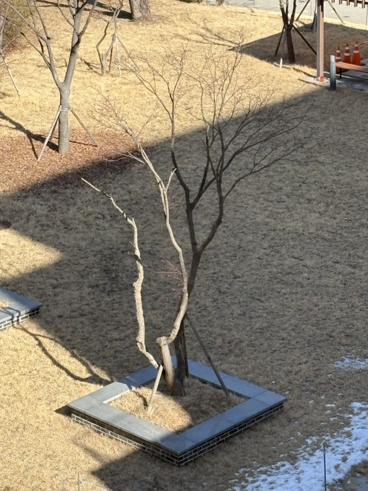

절 1.7 이미지압축
이 절에서는 실수 성분을 갖는 행렬로 모델링한 이미지를 특이값 분해(SVD)를 이용하여 압축하는 방법을 살펴봅니다. 특이값 분해를 사용하면 이미지 행렬을 더 낮은 계수의 행렬로 근사하여 중요한 시각적 정보를 유지하면서 저장해야 할 데이터의 양을 줄일 수 있습니다.
디지털 이미지는 가로와 세로 방향으로 배열된 픽셀로 이루어져 있으므로 행렬로 나타낼 수 있습니다. 흑백 이미지에서는 각 픽셀의 밝기를 실수로 나타내어, 행과 열의 위치에 밝기값을 대응시키는 행렬을 만듭니다. 컬러 이미지에서는 각 픽셀의 색을 빨강(R), 초록(G), 파랑(B)의 세 성분으로 모델링합니다. 각 성분은 보통 일정한 범위의 수로 표현되며, 세 성분의 조합이 픽셀의 색을 결정합니다. 따라서 컬러 이미지는 하나의 행렬이 아니라 R, G, B 성분에 해당하는 세 행렬로 나타낼 수 있습니다.
행렬 \(A\)의 특이값 분해를 \(A=U\Sigma V^{\mathsf T}\)라 하고, 특이값을 내림차순으로 \(\sigma_1\geq\sigma_2\geq\cdots\)라 합니다. 양의 정수 \(r\)에 대한 \(A\)의 계수 \(r\)인 근사는 가장 큰 \(r\)개의 특이값과 이에 대응하는 특이벡터만을 사용하여
\begin{equation*}
A_r=U_r\Sigma_rV_r^{\mathsf T}=\sum_{i=1}^{r}\sigma_i u_i v_i^{\mathsf T}
\end{equation*}
로 정의합니다. 여기서 \(U_r\text{,}\) \(\Sigma_r\text{,}\) \(V_r\)는 각각 \(U\text{,}\) \(\Sigma\text{,}\) \(V\)에서 처음 \(r\)개의 특이값에 대응하는 열과 성분만 취한 것입니다.
이미지 행렬을 계수 \(r\)인 낮은 계수 행렬로 근사한다는 것은, 원래 행렬의 특이값 중 가장 큰 \(r\)개만 사용하여 이미지를 다시 구성한다는 뜻입니다. 이 근사는 원래 이미지의 모든 픽셀값을 저장하는 대신 중요한 밝기와 색의 패턴을 주로 저장합니다. 낮은 계수 행렬은 원래 행렬보다 적은 수의 수로 표현할 수 있으므로 저장 공간이 줄어들며, 이를 이미지의 낮은 계수 근사에 의한 압축이라고 합니다. \(r\)을 크게 하면 원본에 더 가까워지지만 필요한 데이터가 많아지고, \(r\)을 작게 하면 더 많이 압축되지만 세부 정보가 손실될 수 있습니다.
예시 1.7.1. 격자 압축.
예시 1.7.4. 소 이미지 압축.
예시 1.7.7. 그늘 속 나무 사진 압축.

위의 예제들을 통해 특이값 분해를 이용한 이미지 압축의 원리를 이해할 수 있습니다. 낮은 계수 행렬로 이미지를 근사하면 중요한 시각적 정보를 유지하면서 저장 공간을 절약할 수 있습니다. 그러나 계수 \(r\)을 너무 작게 설정하면 이미지의 세부 정보가 손실될 수 있으므로 적절한 균형을 찾는 것이 중요합니다.
적절한 균형이 어디인지 판단하는 것은 이미지의 특성과 사용 목적에 따라 달라집니다.
보조설명 1.7.10. 특이값의 분포가 가지는 특성?
이미지의 특성에 따라 특이값의 분포가 다를까요? 관찰에 따르면 풍경 사진의 경우 지수적 감소를 보이는 경향이 있습니다. 이는 몇 개의 큰 특이값이 대부분의 시각적 정보를 담고 있음을 의미합니다. 반면, 어떤 복잡한 패턴을 가진 이미지에서는 특이값이 더 천천히 감소할 수 있습니다. 실제로, 추상 회화에서는 그 특이값이 선형적으로 감소하는 경향이 관찰되기도 합니다.
무작위행렬에서의 특이값 분포는 일반적으로 균일하게 퍼지는 경향이 있습니다. 이는 이미지와 달리 특정한 구조나 패턴이 없기 때문입니다. 따라서 무작위행렬의 경우 몇 개의 큰 특이값이 전체 정보를 지배하는 현상이 덜 나타납니다.
여기까지는 실용적 관점에서 이미지 압축을 이해하는 데 필요한 기본 개념과 예제를 살펴보았습니다. 이를 뒷받침하는 이론적 근거로 특이값 분해와 관련된 수학적 정리들을 살펴보겠습니다.
정의 1.7.11. 프로베니우스 노름.
행렬 \(A=(a_{ij})\)의 프로베니우스 노름은 모든 성분의 제곱합의 제곱근으로
\begin{equation*}
\lVert A\rVert_F=\left(\sum_{i,j}|a_{ij}|^2\right)^{1/2}
\end{equation*}
로 정의합니다.
정의 1.7.12. 스펙트럼 노름.
행렬 \(A\)의 스펙트럼 노름은 단위 벡터에 대한 \(A\)의 작용의 최댓값으로
\begin{equation*}
\lVert A\rVert_2=\max_{\lVert x\rVert_2=1}\lVert Ax\rVert_2
\end{equation*}
로 정의합니다. 이는 \(A\)의 가장 큰 특이값과 같습니다.
정리 1.7.13. 에카르트-영 정리.
\(A\)의 특이값을 \(\sigma_1\geq\sigma_2\geq\cdots\geq\sigma_q\geq 0\)라 하고, \(A_r\)를 \(A\)의 계수 \(r\)인 특이값 분해 근사라고 하자. 그러면 계수가 \(r\) 이하인 모든 행렬 \(B\)에 대하여
\begin{equation*}
\lVert A-A_r\rVert_2\leq\lVert A-B\rVert_2
\end{equation*}
이고,
\begin{equation*}
\lVert A-A_r\rVert_F\leq\lVert A-B\rVert_F
\end{equation*}
이다. 특히,
\begin{equation*}
\lVert A-A_r\rVert_2=\sigma_{r+1},\qquad \lVert A-A_r\rVert_F=\left(\sum_{i=r+1}^{q}\sigma_i^2\right)^{1/2}
\end{equation*}
이므로 \(A_r\)는 스펙트럼 노름과 프로베니우스 노름에서 \(A\)에 가장 가까운 계수 \(r\) 이하의 행렬이다.
증명.
연습문제.
연습문제 연습문제
1. 에카르트-영 정리의 증명.
위의 에카르트-영 정리를 증명하여라. 즉, \(A\)의 특이값 분해가 \(A=U\,\Sigma V^{\mathsf T}\)이고 \(A_r\)가 처음 \(r\)개의 특이값을 사용한 근사일 때, 계수가 \(r\) 이하인 임의의 행렬 \(B\)에 대하여
\begin{equation*}
\lVert A-A_r\rVert_2\leq\lVert A-B\rVert_2
\end{equation*}
및
\begin{equation*}
\lVert A-A_r\rVert_F\leq\lVert A-B\rVert_F
\end{equation*}
임을 보여라. 또한 두 오차가 각각
\begin{equation*}
\lVert A-A_r\rVert_2=\sigma_{r+1},\qquad \lVert A-A_r\rVert_F=\left(\sum_{i=r+1}^{q}\sigma_i^2\right)^{1/2}
\end{equation*}
임을 증명하여라.
단서 1.
스펙트럼 노름의 경우 \(\operatorname{ker}(B)\)의 차원과 \(\operatorname{rank}(B)\)를 이용하여 \(\operatorname{ker}(B)\)와 처음 \(r\)개의 오른쪽 특이벡터가 생성하는 공간의 교집합에 0이 아닌 벡터가 존재함을 보여라. 그 벡터에 \(A-B\)를 작용시키면 \(\sigma_{r+1}\) 이상의 하한을 얻을 수 있다.
단서 2.
프로베니우스 노름의 경우 \(U\)와 \(V\)가 직교행렬이라는 사실에 의해 노름이 직교변환에 대해 불변임을 사용하라. \(U^{\mathsf T}BV\)의 계수도 \(r\) 이하임을 확인한 뒤, 대각행렬 \(\Sigma\)와의 차이의 대각 성분을 살펴보라.
단서 3.
\(A_r\)를 직접 대입하면 \(A-A_r=U\operatorname{diag}(0,\ldots,0,\sigma_{r+1},\ldots,\sigma_q)V^{\mathsf T}\)이다. 따라서 스펙트럼 노름은 가장 큰 남은 특이값이고, 프로베니우스 노름의 제곱은 남은 특이값의 제곱합이다.